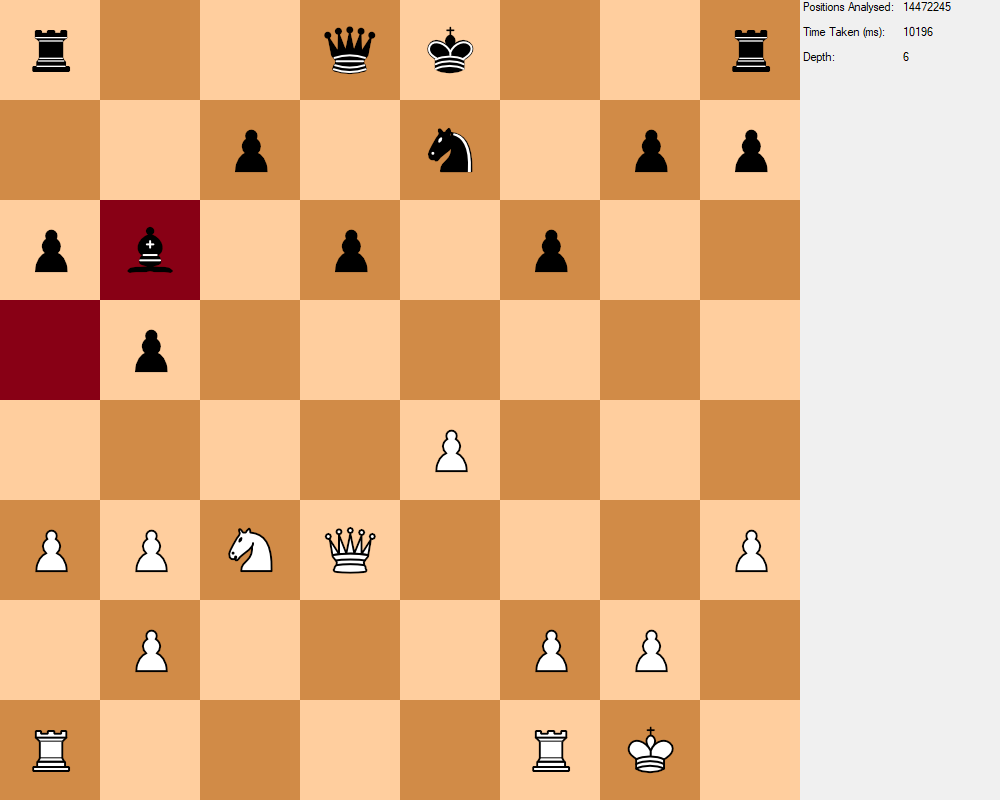

Penelope du Bois
Software Developer - Astrophysicist - Factorio Enthusiast
penelopedubois.disco@gmail.com
About me
I am a full-time software developer with a background in astrophysics, currently based in the North-East of England where I graduated with a first-class Masters Degree in Physics with Astrophysics from Northumbria University.
I have been using computers and programming for essentially my entire life and am proficient in C++, C#, Python, and Javascript.
I've been trying to develop a video game for like 5 years and I'm sure after another 5 I'll have something to show for it.
I am an avid chess player, finding joy in the strategic depths and mental challenges it offers.
I also enjoy playing video games such as Factorio, where problem-solving and optimization skills are essential, and am currently stuck on Vulcanus after my space platform was destroyed by asteroids in orbit.
Big fan of poker, so when Balatro released I lost about a week of my life.
Projects
Master's Dissertation - Magnetospheric Asymmetries (link)

My master's dissertation was concerned with the study of hemispheric asymmetries within the field-aligned currents in the Earth's magnetosphere.
This investigation entailed the processing of extensive data sets and was the first investigation of this kind to employ the use of ground-based observation.
For this I employed several advanced techniques in Python for data manipulation and analysis to compare 2 years worth of magnetometer data.
The data from this investigation confirmed several previous observations as well as observing for the first time the impact of the atmosphere on magnetospheric currents.
Bachelor's Dissertation - White Dwarf Accretion (link)

For my bachelor's dissertation I investigated white dwarf accretion disks to determine the impact that speed and angle of rotation have on accretion timescales. This involved producing a model in C# of the forces of gravity, Poynting-Robertson drag, and diamagnetic drag to simulate the orbits of particles in various configurations. I then used python to analyse and graph the data, finding novel scenarios which helped elucidate previously unexplainable observations of white dwarfs.
N-Body Simulator

I am working on producing an accurate Newtonian N-Body simulator taking advantage of C++ and using Raylib for real-time graphics.
The simulator is fully 3D, using the RKF45 iterative method for each time-step and can use Eulerian integration to predict the future paths of each body.
Users can interact with every facet of the simulation in real-time, with free camera movement and the ability to adjust the tolerance of each time-step.
Chess AI
Using C#, I developed an AI for the game of chess. Leveraging the MiniMax algorithm, the AI autonomously navigates through the tree of possible moves, analyzing each potential position to calculate the best possible move at any given search depth. The program is fully multithreaded and able to take advantage of an arbitrary number of CPU cores.
Education
Physics with Astrophysics - First Class Masters Degree
- 75% - Masters's Dissertation
- 71% - Advanced Space Plasmas
- 64% - Advanced Solar Physics
- 63% - Numerical Solutions of Partial Differential Equations
- 74% - Bachelor's Dissertation
- 72% - Solar Physics
- 67% - Cosmology + Stellar Evolution
- 61% - Dynamical Systems
- 50% - Quantum Devices
A - Levels
- A - Mathematics
- B - Further Mathematics
- B - Physics
- B - Computer Science
Contact Details
penelopedubois.disco@gmail.com